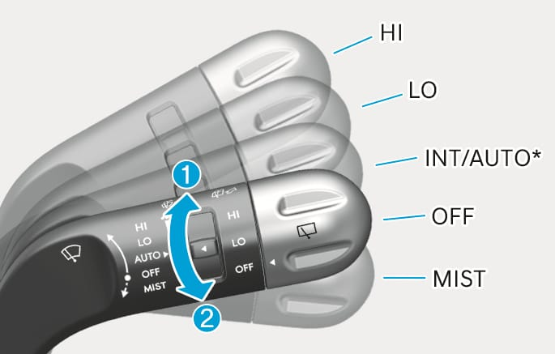
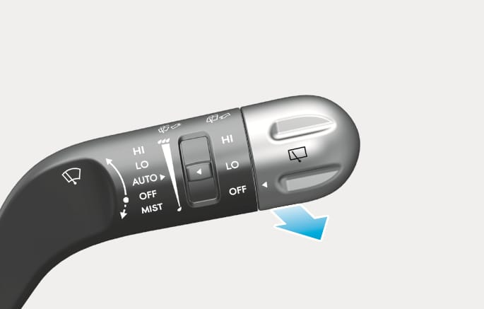
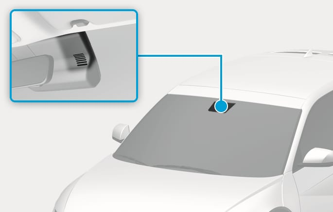

앞유리 와이퍼 작동하기

2C_WiperSwitchOverview
- AUTO 모드 민감도 증가
- AUTO 모드 민감도 감소
스위치 위치에 따른 앞유리 와이퍼 작동 방식은 다음과 같습니다.
-
HI: 빠른 속도로 작동
-
LO: 보통 속도로 작동
-
INT: 간헐 작동
-
AUTO*(사양 적용 시): 감지된 강우량에 따라 자동 작동
-
OFF: 와이퍼 끄기
-
MIST: 1회 작동 후 OFF
-
스위치를 MIST 위치로 당긴 채 유지하면 와이퍼가 계속해서 작동하며, 와이퍼 스위치에서 손을 떼면 스위치가 OFF 위치로 되돌아 갑니다.
-
와이퍼 시스템 부품에 이상이 발생해 와이퍼가 정상적으로 작동하지 않는 경우, 와이퍼 작동 속도가 LO(보통 속도)로 고정됩니다. 이런 경우, 즉시 당사 직영 하이테크센터나 블루핸즈에서 차량을 점검하십시오.
와이퍼 스위치가 AUTO 위치에 있을 때 와이퍼의 작동 방식은 다음과 같습니다.
-
앞유리에 설치된 센서가 강우량을 감지하고, 강우량에 따라 와이퍼 속도를 자동으로 조절하거나 와이퍼 작동을 멈춥니다.
-
와이퍼 작동 속도를 조절하려면 감도 조절 노브를 돌려 민감도를 조정하십시오. 민감도가 높을수록 작동 속도가 빨라집니다.
-
와이퍼 스위치를 AUTO로 이동하거나, AUTO 작동 중 감도 조절 노브를 HI 방향으로 돌리면 와이퍼가 1회 작동해 설정이 변경되었음을 알립니다.

2C_WasherSwitch
앞유리에 와셔액을 뿌리려면 와이퍼 스위치를 운전자 방향으로 당기십시오.
-
와이퍼가 작동하며 유리에 와셔액이 분사됩니다.
-
스위치를 당긴 채 유지하면 와이퍼 작동과 와셔액 분사가 반복됩니다.
-
스위치를 놓으면 와이퍼가 약 4회 작동한 후 원래 위치로 돌아옵니다.
와셔액 분사 시 실내 공기 순환
와셔액을 분사할 때, 외부 온도에 따라 실내 순환 모드 및 에어컨이 자동으로 작동하며 와이퍼액 냄새의 실내 유입을 방지합니다.
-
실내 순환 모드 작동 중 내기/외기 선택 버튼을 누르면 외기 순환 모드로 전환됩니다.
-
외기 순환 모드 작동 중 와셔액 스위치를 조작하면 실내 순환 모드로 전환됩니다.
-
특정한 상황에서는 실내 공기 순환 기능이 작동하지 않을 수 있습니다(시동 'OFF' 상태인 경우, 앞유리 서리 제거 기능이 작동 중인 경우 등).
-
와이퍼를 사용할 필요가 없을 때에는 와이퍼를 끄십시오(스위치 위치: OFF). 와이퍼가 AUTO 모드에서 멈춰있는 경우 와이퍼가 갑자기 작동할 수 있습니다.
-
세차 전에는 와이퍼를 끄십시오(스위치 위치: OFF). 스위치를 AUTO 위치에 두고 세차하는 경우, 센서가 물을 감지하며 와이퍼가 작동해 와이퍼 부품이 손상될 수 있습니다.
-
앞유리에 설치된 센서 커버를 강제로 분리하지 마십시오. 관련 부품이 손상될 수 있습니다.
-
앞유리가 언 경우 와이퍼 스위치를 OFF 위치에 두십시오. 와이퍼가 작동하면 와이퍼 블레이드가 손상될 수 있습니다.
-
AUTO 모드 작동 중 광학 센서가 사용되므로 주행 중 오염이나 갑작스런 밝기 변화가 발생하는 경우 순간적인 오작동이 발생할 수 있습니다.
-
왁스나 발수 코팅제가 앞유리에 묻어 있거나 와이퍼 블레이드가 마모된 경우, 센서가 비의 양을 정확히 감지하지 못해 와이퍼가 비정상적으로 작동할 수 있습니다.
-
앞유리에 선팅 필름을 부착할 때 설치된 센서에 수분이 유입되지 않도록 주의하십시오. 관련 부품이 손상될 수 있습니다.
-
시동 'ON' 상태에서 와이퍼 스위치를 AUTO 위치에 두면 다음과 같은 경우 와이퍼가 자동으로 작동할 수 있습니다. 신체 일부가 와이퍼에 부딪치지 않도록 주의하십시오.
-
동승석 쪽 유리창 외부(센서 설치부)를 손으로 만지거나 유리를 젖은 수건 등으로 닦는 경우
-
앞유리 또는 센서에 진동을 가하는 경우

2C_RainSensor
-